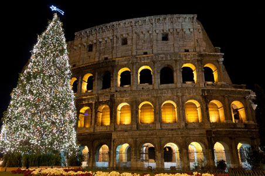
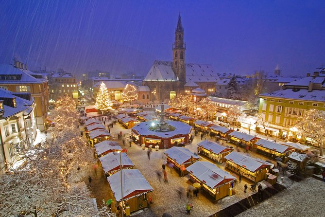
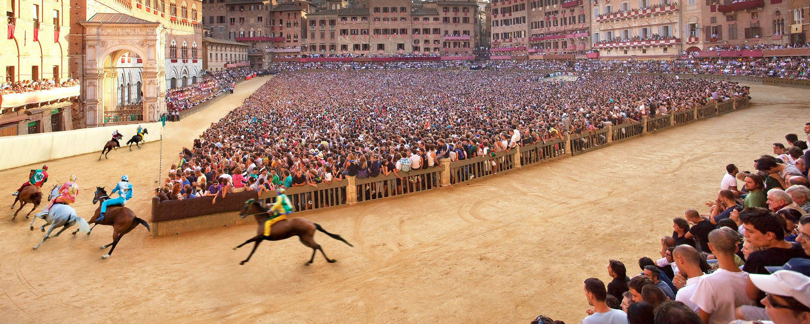
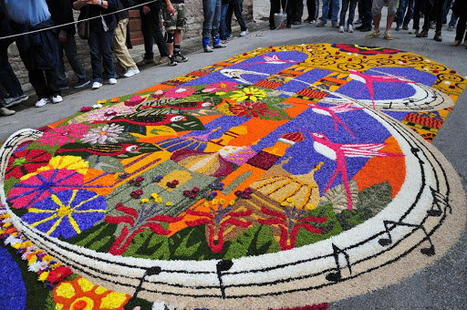

Świąteczny Miesiąc
Święta Bożego Narodzenia we Włoszech celebruje się cały miesiąc, począwszy od 8 grudnia do 6 stycznia. 8 grudnia to Święto Niepokalanego Poczęcia, które we Włoszech jest świętem narodowym, rozpoczynającym sezon świąteczny w Italii. Odznacza się to ozdabianiem ulic, drzew, a także przygotowaniem szopki bożonarodzeniowej, co we Włoszech stanowi ważną tradycję. Grudzień to też czas spotkań rodzinnych.

Jarmarki Bożonarodzeniowe
Jarmarki bożonarodzeniowe spotykane są w wielu miastach w Europie i na świecie. Jest to nieodłączny element włoskich celebracji świątecznych. Podczas jarmarku można kupić wiele pamiątek, lokalnych ręcznie robionych prezentów i produktów i spróbować lokalnych wyrobów.

Palio
Odbywający się w mieście Siena słynny toskański festyn na cześć Matki Boskiej, który sięga tradycją czasów średniowiecza. Punktem kulminacyjnem tego święta, którym żyje całe miasto jest otwarta dla widzów gonitwa konna.

Boże Ciało
Włosi świętują święto Bożego Ciała poprzez tworzenie dywanów z kwiatów na ulicach. Oprócz tego, że jest to przedsięwzięcie związane z religią, to jest to swojego rodzaju celebracja wiosny, która jest podczas tego święta w pełni swojego rozkwitu. Jest to okazja aby lokalni artyści, floryści i znawcy roślin pokazali swoje umiejętności.
